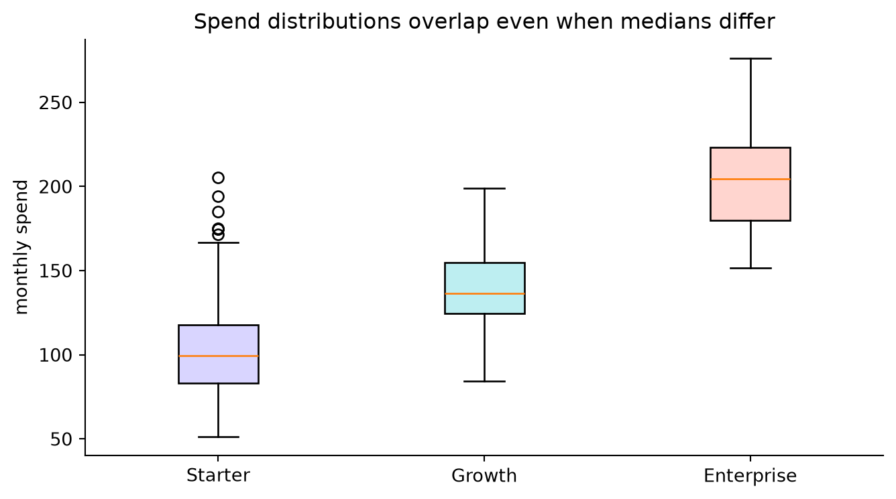
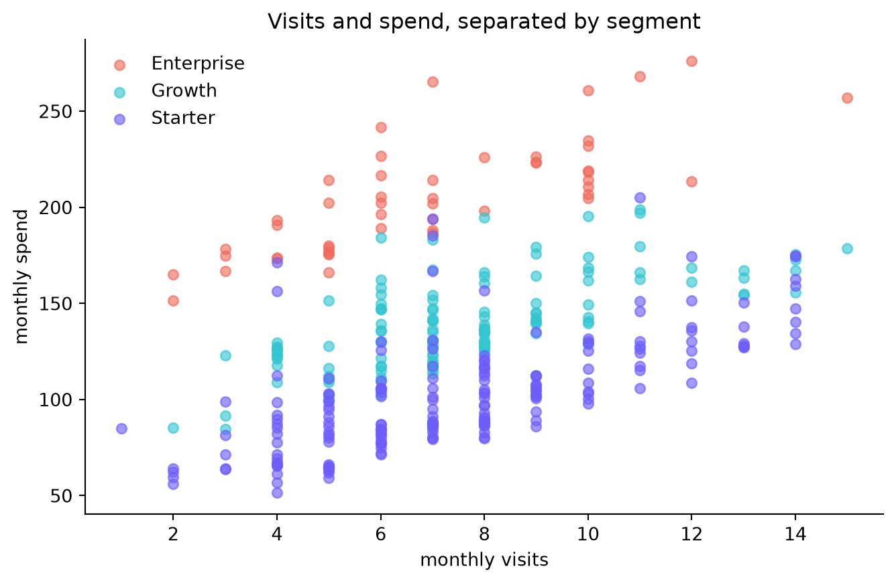

Use distributions, group comparisons, relationships, and uncertainty to ask better questions of data.
Author
Edukron Notes Academy
Published
September 8, 2026
Exploratory data analysis is structured curiosity. It helps you understand distributions, discover data problems, generate hypotheses, and decide what deserves formal analysis. It does not turn every visual pattern into a causal claim.
Learning goals
You will move from one-variable distributions to group comparisons and relationships, choose robust summaries, quantify uncertainty with a bootstrap, and write conclusions that separate observation from explanation.
order = ["Starter", "Growth", "Enterprise"]values = [customers.loc[customers.segment == name, "monthly_spend"] for name in order]fig, ax = plt.subplots(figsize=(8, 4.2))box = ax.boxplot(values, tick_labels=order, patch_artist=True, showfliers=True)for patch, color inzip(box["boxes"], ["#d9d5ff", "#bdeef1", "#ffd5cf"]): patch.set_facecolor(color)ax.set(title="Spend distributions overlap even when medians differ", ylabel="monthly spend")ax.spines[["top", "right"]].set_visible(False)plt.show()

3. Inspect relationships—and possible confounders
A positive spend–visit relationship is plausible, but segment affects spend too. Color by segment so a pooled trend does not hide group structure.
Code
palette = {"Starter": "#6d5dfc", "Growth": "#32c5d2", "Enterprise": "#ef6a5b"}fig, ax = plt.subplots(figsize=(8, 4.8))for name, group in customers.groupby("segment"): ax.scatter(group.monthly_visits, group.monthly_spend, s=30, alpha=.62, label=name, color=palette[name])ax.set(title="Visits and spend, separated by segment", xlabel="monthly visits", ylabel="monthly spend")ax.legend(frameon=False)ax.spines[["top", "right"]].set_visible(False)plt.show()customers.select_dtypes("number").corr().round(2)

tenure_months
monthly_visits
monthly_spend
satisfaction
tenure_months
1.00
0.25
0.10
0.53
monthly_visits
0.25
1.00
0.38
0.09
monthly_spend
0.10
0.38
1.00
-0.24
satisfaction
0.53
0.09
-0.24
1.00
The correlation table describes linear co-movement in this sample. It does not say that increasing visits will cause spend to rise. Segment, promotions, customer intent, and product availability are all alternative explanations.
4. Put uncertainty around a difference
A bootstrap repeatedly resamples observations with replacement. The resulting distribution shows how much a statistic could vary under similar sampling—not every source of real-world uncertainty.
Observed median difference: 37.0
95% bootstrap interval: [29.6, 46.8]
Write the conclusion in layers
Observation: Enterprise customers have the highest monthly spend distribution, and visits are positively associated with spend inside the sample.
Inference: Segment mix explains some of the pooled relationship, so a single overall correlation is incomplete. The bootstrap suggests the Growth–Starter median gap is not just a tiny sample fluctuation in this generated dataset.
Limitation: This is observational data. We have not established whether more visits cause more spending, and we have not examined selection into segments.
Next step: define an intervention—such as a targeted engagement campaign—and design a controlled test or a stronger quasi-experimental analysis.
Try it yourself
Investigate satisfaction by tenure. Compare a single overall relationship with relationships inside each segment, then explain whether aggregation changed the story. This completes the core Data Science course.